В данном уроке рассмотрены различные способы выделения объектов и подобъектов (вершин, ребер, граней) модели в бесплатном 3D редакторе Blender.
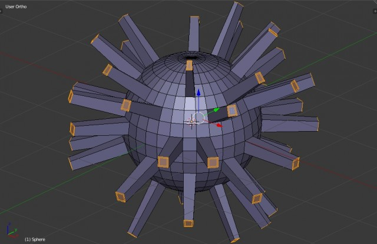
Урок состоит из четырех частей:
Часть 1. Основные принципы выделения в Blender, в том числе особенности выделения в режимах отображения «Wireframe» и «Solid».
Часть 2. Выделение подобъектов расположенных в ряд по линиям.
Часть 3. Ручное выделение множества подобъектов специальными инструментами: рамкой, окружностью, произвольной формой.
Часть 4. Автоматическое выделение подобъектов по указанным признакам: длине, площади, материалам, текстурам, направлению нормалей, числу ребер и т.д.
Урок будет полезен как новичкам, так и опытным пользователям данной программы.
1. Принципы выделения в Blender
Выделение, как объектов, так и подобъектов в Blender осуществляется при помощи щелчка правой кнопки мыши. Если необходимо выделить несколько элементов, то это осуществляется при зажатой клавише «Shift».
Выделение абсолютно всех объектов в слое, либо подобъектов объекта осуществляется простым нажатием клавиши «A», ей же и снимаются абсолютно все выделения.
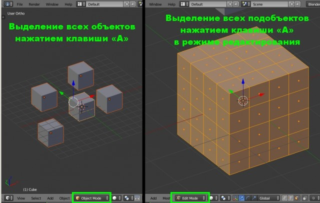
Выделение объекта, расположенного позади или внутри другого объекта
Если необходимо выделить объект, который расположен сзади или внутри другого объекта и находится вне поля зрения, то это делается следующим образом: при зажатой клавише «Alt», правой кнопкой мыши необходимо щелкнуть на место его расположения. В результате появится меню со списком объектов, из которых можно выбрать невидимый объект.
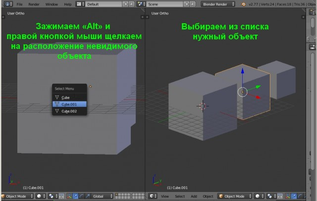
Выделение подобъектов в режимах отображения «Wireframe» и «Solid»
Основная работа в Blender ведется в двух основных режимах отображения: «Wireframe» (Каркасный) и «Solid» (Цельный). Здесь следует отметить некоторые важные особенности этих режимов при выделении подобъектов.
1. В режиме отображения «Solid» выделяются только те подобъекты, которые непосредственно видны, то есть ни вершины, ни ребра, ни грани на обратной стороне в данном режиме выделить нельзя;
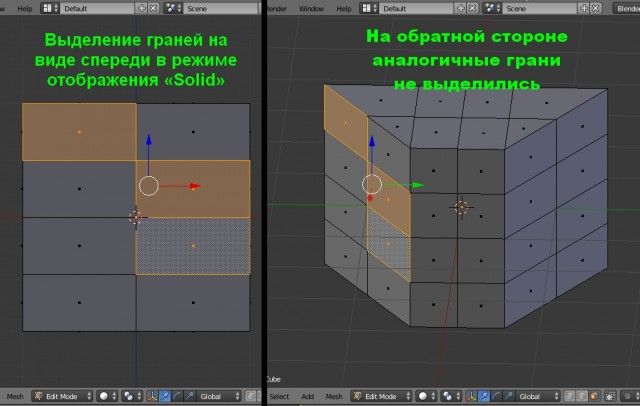
2. Допустим, что на виде спереди нужно выделить не только передние грани (ребра, вершины), но и те которые находятся сзади – с обратной стороны. Это можно сделать, перейдя в каркасный режим «Wireframe». Только здесь нужно учитывать следующую особенность выделения в Blender. В этом режиме отображения грань условно делится пополам. Если правой кнопкой мыши щелкнуть по её верхней половине, то выделится передняя грань, а если по нижней, то аналогичная задняя грань.
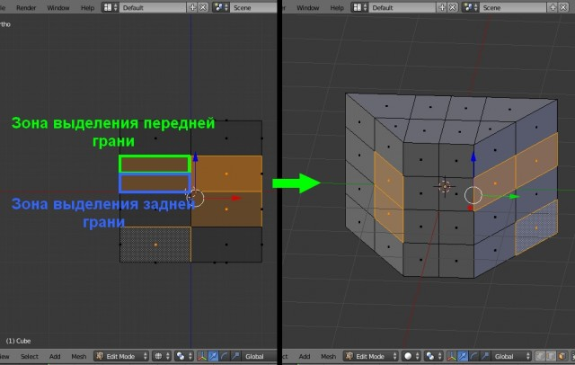
Похожая ситуация с вершинами: если правой кнопкой мыши щелкнуть выше вершины, то выделится вершина, расположенная спереди. Если же щелкнуть, ниже вершины, то выделится вершина, расположенная сзади – на обратной стороне объекта.
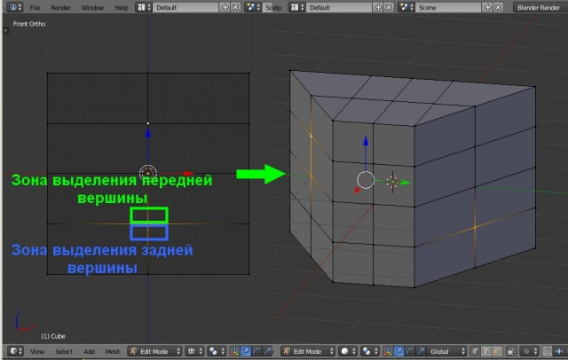
Выделение горизонтальных ребер происходит по-другому. Здесь щелчок по пространству выше ребра выделяет переднее ребро, щелчок по пространству ниже – заднее.
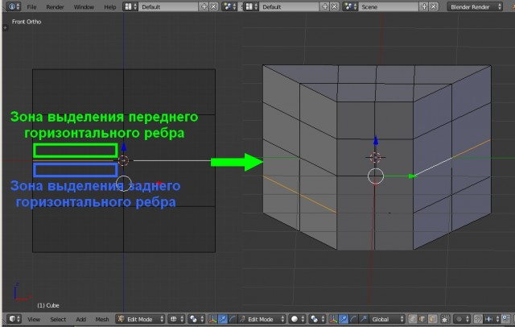
Выделение ближайшего скопления подобъектов
Допустим, что нужно выделить близлежащие вершины (ребра, грани) вокруг указанной вершины. Это делается следующим образом: указывается подобъект (вершина, ребро, грань) или несколько подобъектов, а затем при нажатой клавише «Ctrl» нажимаем на клавишу «+». Каждое нажатие на клавишу «+» будет выделять следующий ближайший окружающий ряд подобъектов. Таким образом, произойдет равномерное выделение близлежащих подобъектов вокруг выделенного.
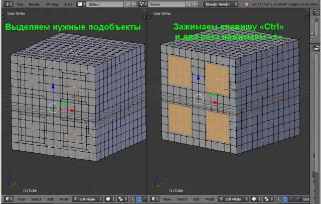
Равномерное снятие выделений с подобъектов происходит аналогично зажатой клавишей «Ctrl», но при помощи клавиши «-».
Выделение отдельных элементов в объекте
Если объект состоит из нескольких элементов разделенных между собой, то их выделение происходит следующим образом: правой кнопкой мыши указывается, например, какая-нибудь вершина элемента, а затем нажимаем сочетание клавиш «Ctrl+L».
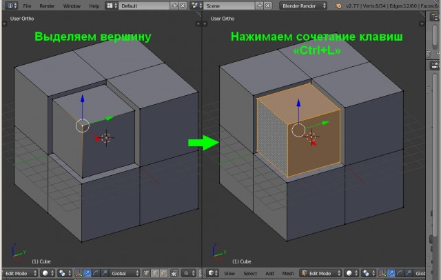
Выделение всех подобъектов кроме указанных
Допустим, что объект состоит из нескольких сотен граней, а выделить необходимо все, кроме каких-нибудь пяти. Для этого выделяем эти пять граней, а затем нажимаем сочетание клавиш «Ctrl+I».
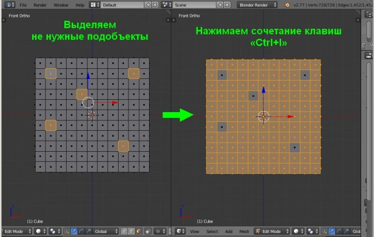
В результате с этих пяти граней выделения снимутся, а все остальные будут автоматически выделены – произойдет инвертирование.
Выделение отверстий (дыр) в объекте
Выделение отверстий (дыр) в объекте возможно только на уровне редактирования вершин или ребер и осуществляется следующим образом. При зажатой клавише «Alt» правой кнопкой мыши нужно щелкнуть между любыми вершами отверстия. Если при этом выделится не всё отверстие, а только её часть, то необходимо дополнительно зажать клавишу «Shift» и правой кнопкой мыши щелкнуть между любыми вершинами оставшейся части отверстия.
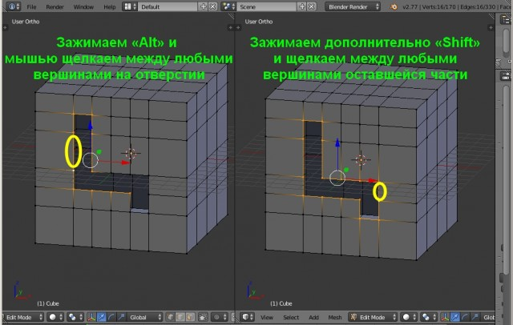
Данный способ выделения является аналогом инструмента выделения «Border» (Граница) в Autodesk 3ds Max.
2. Выделение подобъектов расположенных в ряд
Допустим, что необходимо выделить ряд вершин, ребер или граней расположенных на одной прямой. Это осуществляется при помощи зажатой клавиши «Alt» и щелчком правой кнопки мыши между вершинами данной прямой (для вершин) или указанием ребра, лежащего на этой прямой (для ребер). Аналогично выделяется и ряд граней.
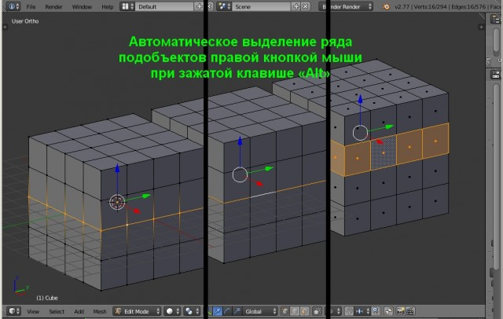
Если вместе с «Alt» зажать «Shift», то можно выделить сразу несколько рядов подобъектов, расположенных на разных прямых.
Выделение ряда параллельных ребер производится правой кнопкой мыши при зажатых клавишах «Alt+Ctrl», а нескольких рядов – при зажатых клавишах «Alt+Ctrl+Shift».
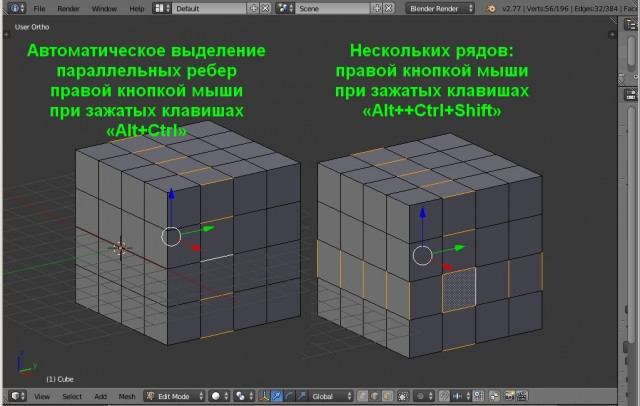
Здесь следует сделать одно важное замечание. Для корректного выделения ряда подобъектов, необходимо, чтобы на прямой были только вершины с четырьмя ребрами. Ели же в каком-то месте их будет больше или меньше, то выделение ряда там будет прервано.
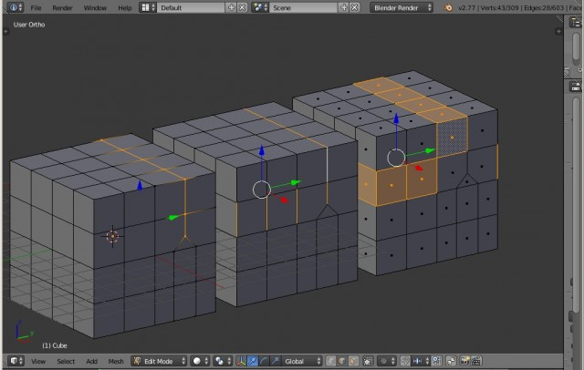
3. Ручное выделение множества подобъектов
Как было отмечено выше, если необходимо выделить несколько объектов или подобъектов, то это можно сделать при зажатой клавише «Shift». Этот способ выделения подходит для малого числа объектов/подобъектов. Если же необходимо выделить множество объектов/подобъектов, то для этой цели в Blender предназначены специальные инструменты. Рассмотрим их.
Выделение прямоугольной рамкой
Включение инструмента «Рамка» осуществляется нажатием клавиши «B», а выделение производится зажатой левой кнопкой мыши. Данный инструмент предназначен, в основном, для выделения однотипных подобъектов расположенных на прямых линиях по вертикали или горизонтали.
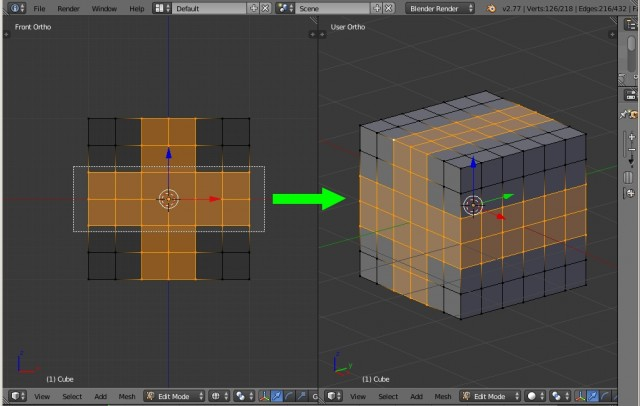
Для выделения нескольких групп подобъектов подряд, например, сначала вертикальных, а затем горизонтальных, клавишу «Ctrl» зажимать не нужно, достаточно, при уже выделенных подобъектах, снова нажать клавишу «B».
Отключается рамка нажатием клавиши «Esc» или правой кнопкой мыши.
Так же рамкой можно снимать выделение, для этого нужно нажать «B», но вместо левой кнопки мыши нажать на её колёсо.
Выделение окружностью
Включение инструмента «Окружность» осуществляется нажатием клавиши «С», а выделение зажатой левой кнопкой мыши. Инструмент «Окружность» предназначен, в основном, для выделения подобъектов или их групп, имеющих круглую форму. Размер окружности регулируется колесом мыши. Отключается данный инструмент нажатием на клавишу «Esc», «Enter» или правую кнопку мыши.
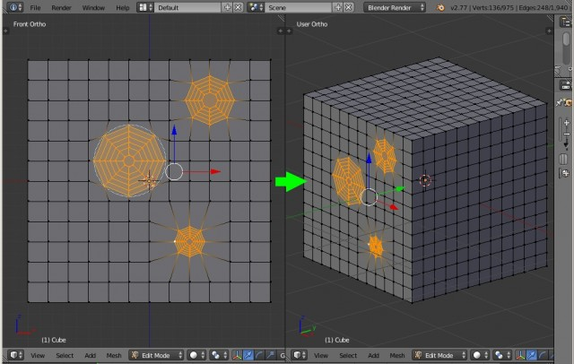
Снятие выделений с подобъектов данным инструментом происходит путем нажатия на колесо мыши.
Выделение произвольной формой
Если же необходимо выделить группы подобъектов сложной формы расположенных хаотично, то для этого предназначен инструмент «Лассо». Выделение им происходит левой кнопкой мыши при зажатой клавише «Ctrl».
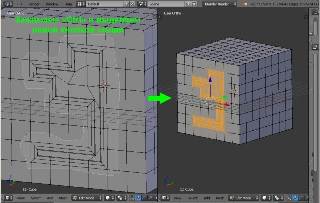
Снимается выделение данным инструментом так же левой кнопкой мыши, но при зажатых клавишах «Ctrl+Shift».
Рассмотренными способами можно выделять как объекты, так и подобъекты во всех режимах отображения.
4. Автоматическое выделение подобъектов по указанным признакам
Допустим, что нужно выделить подобъекты по какому-нибудь признаку: грани определенной формы или цвета, ребра определенной длины, вершины с определенным числом ребер и т.д. Для этого предназначен инструмент «Select Similar» (Выбор Подобного), который вызывается в режиме редактирования объекта сочетанием клавиш «Shift+G». Выделение граней, ребер и вершин при помощи его происходит по различным признакам. Рассмотрим их подробно.
Выделение вершин по указанным признакам
Вершины можно выделить по следующим признакам:
1. По направлению нормалей (направление нормали указывает, в какую сторону направлена лицевая сторона полигона). Для этого необходимо выделить вершину и вызвать меню «Select Similar» сочетанием клавиш «Shift+G», а после выбрать пункт «Normal» (Нормаль).
2. По числу прилегающих граней: пункт «Amount of Adjacent Faces» (Количество Смежных Граней).
3. По числу прилегающих ребер: пункт «Amount of connecting edges» (Количество соединяющих ребер).
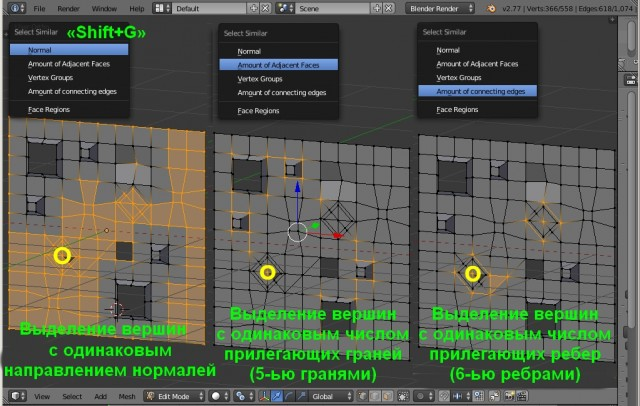
4. По группам вершин. Допустим, необходимо постоянно выделять некоторое скопление вершин, которые расположены хаотично. Для этого удобно их объединить в группу: выделить, нажать сочетание клавиш «Ctrl+G» и выбрать пункт «Assign to New Group» (Назначить Новую Группу). После этого достаточно выделить любую вершину данной группы, нажать сочетание клавиш «Shift+G» и выбрать пункт «Vertex Groups» (Группы Вершин). Все вершины данной группы будут автоматически выделены.
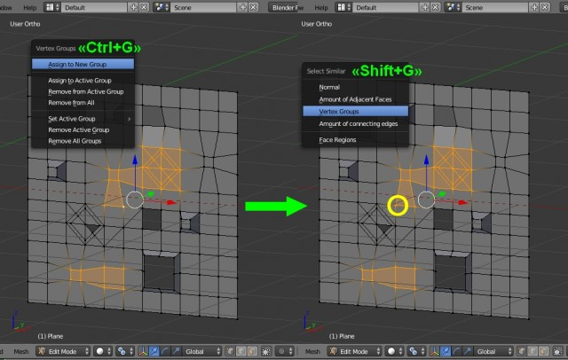
Выделение ребер по указанным признакам
Здесь параметров выделения немного больше. Рассмотрим основные. Выделение происходит так же через всплывающее меню «Select Similar», вызываемое сочетанием клавиш «Shift+G».
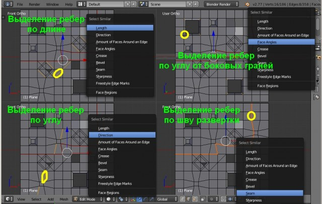
Выделение граней по указанным признакам
Здесь так же рассмотрим только основные способы. Выделение происходит аналогично через «Select Similar» сочетанием клавиш «Shift+G».
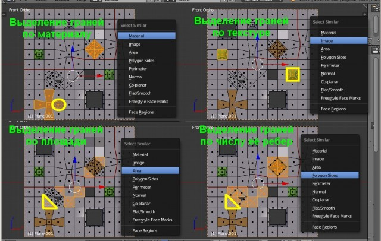
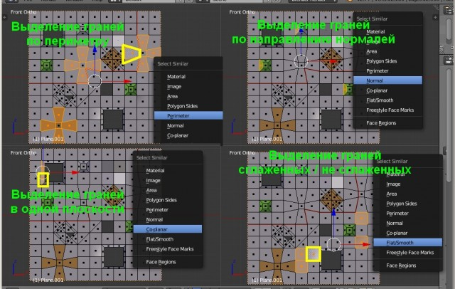
В заключение следует отметить, что при выделении через меню «Select Similar» у каждого параметра в колонке слева внизу появляется меню с его настройками. Если слева колонка вообще отсутствует, то она вызывается клавишей «T». Здесь можно установить погрешность выделения по длине, площади и т.д.
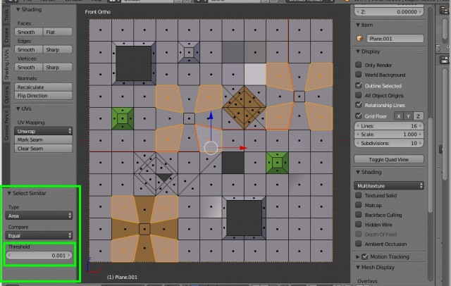